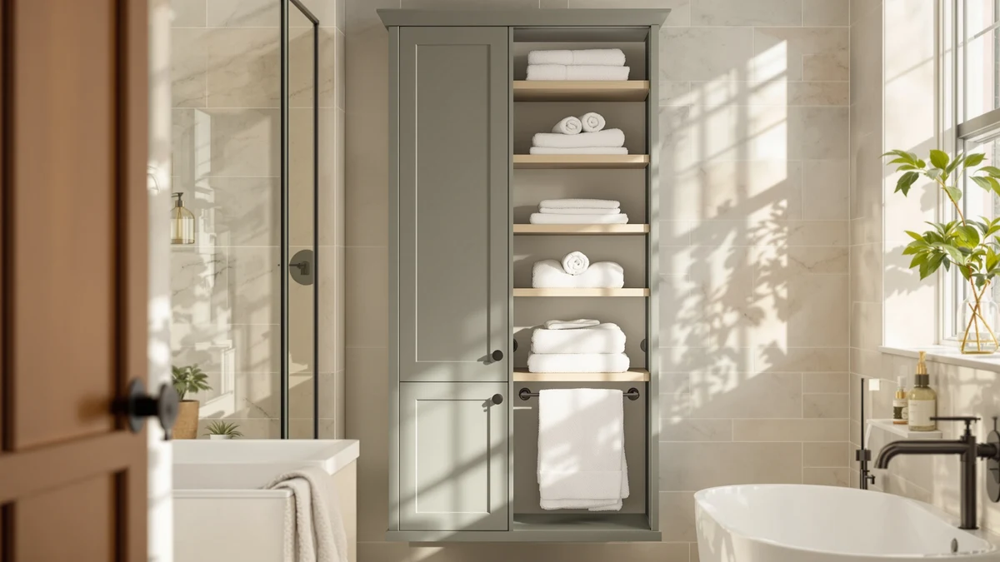

Best Bathroom Shelves for Towels (2026)
Prices and picks verified as of August 2026. Independent, reader-supported reviews.


Quick Answer
The best bathroom shelves for towels balance open, breathable shelving with a footprint that clears your toilet tank. Our pick is the VASAGLE Over the Toilet Storage, which pairs two open shelves sized for folded bath towels with an enclosed cabinet for everything else, all for $69.99.
Our pick: VASAGLE Over the Toilet Storage, $69.99 Check Price on Amazon
Bottom line: our top pick is the VASAGLE Over the Toilet Storage Cabinet at $59.49. The best budget option is the GloTika 3-Tier Over Toilet Storage with Anti-Tilt Safety at $32.99.
Things to Know Before You Buy
- Tier count drives towel capacity. A 3-tier rack like the GloTika fits smaller bathrooms, while 4-tier and 5-tier designs give you a shelf reserved for folded towels.
- Open shelves beat closed cabinets for towels. Towels need airflow to dry between uses, so a rack with at least one open shelf works better than a fully enclosed cabinet.
- Check the frame width against your toilet tank. Most of these racks list a footprint between 23 and 33 inches wide, and a tank that's wider or taller than average can crowd the lowest shelf.
- Weight capacity varies by shelf, not by the unit as a whole. Manufacturers usually rate top and bottom shelves differently, so check the per-shelf limit before loading heavy towel stacks on an upper tier.
- Metal frames resist bathroom humidity better than particleboard alone. Powder-coated steel legs hold up longer in a damp bathroom than bare MDF.
The best bathroom shelves for towels turn the dead space above your toilet into a place for folded towels, extra tissue, and everyday toiletries, without eating into your floor plan. Most bathrooms waste that entire vertical strip, leaving towels stacked on the floor or crammed into an already-full linen closet.
We compared seven over-the-toilet racks built specifically to hold towels, spanning three tiers to five, metal-and-wood frames, and prices from $32.99 to $95.98. We looked at listed weight capacity, shelf depth, and how each unit's open-shelf design handles rolled or folded towels compared with a closed cabinet. Our pick is the VASAGLE Over the Toilet Storage: at $69.99 it pairs a stable metal frame with two open shelves sized for folded bath towels, plus a cabinet section for anything you'd rather keep out of sight.
None of these racks suit a tiny half-bath with a swinging door, and if your ceiling height is unusual you'll want to check the listed height before you buy. For a standard toilet footprint, though, any of the seven picks below adds real towel storage without a full remodel.
Why You Should Trust Us
I'm Ilane Tall, and I cover bathroom storage for Best Bathroom Storage, with a focus on the small, awkward zones every bathroom has, including the strip of wall above the toilet. Picking the best bathroom shelves for towels means checking whether a shelf that looks right in a product photo will actually clear a real toilet tank and hold a real stack of towels. For this guide I compared manufacturer specifications, published dimensions, and verified buyer reviews across seven racks rather than relying on marketing copy. We earn a commission if you buy through our links, but that has no bearing on which products we recommend or what we say about their drawbacks.
How We Picked
We started with over-the-toilet racks explicitly marketed to hold towels, then narrowed the list using four filters. First, the unit needed at least one open shelf sized for folded bath towels, rather than a closed cabinet or a narrow ledge alone. Second, we required a metal or reinforced frame rather than plastic, since plastic legs tend to flex under a full stack of towels.
Third, we cross-checked listed weight capacity against the number of shelves, ruling out racks whose top tier is rated for decorative items only. Finally, we compared prices across the group, from $32.99 to $95.98, so the lineup covers budget and premium options instead of clustering around one price point.
How We Compared
We compared these seven bathroom shelves for towels on published dimensions, frame material, shelf configuration, and verified owner reviews rather than a unit we bought and installed ourselves. For each pick we logged the footprint in inches of width and depth, the number of tiers, and whether the design adds an enclosed cabinet alongside the open shelving.
We also read through verified Amazon reviews for recurring complaints: wobbling on uneven floors, shelves that scratch easily, and hardware that arrives with missing parts. The pros and cons below reflect patterns reviewers report across a given model rather than one buyer's experience with a single unit.
Our Picks

VASAGLE Over the Toilet Storage
What we like
- Two open shelves sized for folded bath towels
- Enclosed cabinet keeps toilet paper and cleaning supplies out of view
- Metal frame legs rated for a stable base on tile and vinyl floors
Flaws but not dealbreakers
- At 70 inches tall, it can feel bulky in a bathroom with a low ceiling
- A few buyers mention the back panel arriving with pre-drilled holes that don't quite line up
| Material | Metal / wood |
| Size | 7.9"D x 24.6"W x 70"H |
The VASAGLE Over the Toilet Storage is the pick we'd point most shoppers to first. It stands 70 inches tall on a 24.6 by 7.9 inch footprint, with two open shelves stacked above an enclosed cabinet. That layout gives you a dedicated spot for a folded stack of bath towels on the top shelf, room for hand towels or extra toiletries on the second, and a closed door below for anything you'd rather hide, like cleaning supplies or a spare roll of toilet paper.
Once assembled, the frame feels sturdier than similarly priced racks, thanks to metal legs that anchor the base. The most common complaint in the reviews is the assembly instructions, which several buyers found harder to follow than the hardware itself. At $69.99, it sits in the middle of this lineup's price range, and it's the rack we'd recommend if you want both open towel storage and closed cabinet space in one unit.

Kalrin Over-The-Toilet Storage Rack 4-Tier
What we like
- Four separate tiers spread towel storage across more surface area
- X-Large frame footprint gives each shelf more usable depth
- Open design lets towels air out between uses
Flaws but not dealbreakers
- The taller frame needs a level floor to avoid wobble on the top tier
- No enclosed storage, so everything on the shelves stays visible
| Material | Metal / wood |
| Size | X-Large |
The Kalrin Over-The-Toilet Storage Rack spreads storage across four tiers instead of the two or three shelves you'll find on more compact racks. Kalrin lists the frame as X-Large, and the extra shelf depth shows in practice: you can stack folded bath towels on one tier, hand towels on another, and still have room left for baskets of toiletries.
Because every tier is fully open, towels get more airflow than they would in a rack with an enclosed cabinet, useful in a bathroom that stays steamy after showers. The frame needs careful leveling during setup; buyers who skip this step say the four-tier height makes any floor unevenness more noticeable at the top. At $69.99, it matches the VASAGLE pick on price but trades the enclosed cabinet for two additional open shelves, which makes it the better choice if you'd rather have more visible storage than a hidden compartment.

Nivisre Over The Toilet Storage
What we like
- 32-inch width and 9.8-inch depth give each shelf more room than narrower competitors
- Extra depth accommodates rolled towels as well as folded ones
- Frame height of 65 inches fits under most standard 8-foot ceilings
Flaws but not dealbreakers
- At $95.98, it's the most expensive rack in this lineup
- The wider footprint needs more clear wall space than narrower racks
| Material | Metal / wood |
| Size | 32" W x 9.8" D x 65" H |
The Nivisre Over The Toilet Storage is built wider and deeper than every other rack on this list, at 32 inches across and 9.8 inches deep. That extra depth matters for towels specifically: a rolled towel or a bulky robe fits on these shelves without hanging off the edge, which is a real limitation on some of the narrower racks here.
The tradeoff is price. At $95.98, the Nivisre costs roughly $26 more than our top pick and nearly triples the cost of the budget option in this group. Buyers frequently describe the extra width as making the unit feel more like furniture than a typical over-the-toilet rack, but that same width means you'll need a wider clear wall area behind the toilet before you buy. We'd recommend it for bathrooms with room to spare rather than a tight guest bath.

VASAGLE BARNET Collection - Over
What we like
- 9.4-inch shelf depth, deeper than the brand's other pick on this list
- Priced $20 lower than the standard VASAGLE Over the Toilet Storage
- BARNET collection frame uses the same metal-leg construction reviewers praise on VASAGLE's pricier racks
Flaws but not dealbreakers
- Fewer enclosed storage options than the standard VASAGLE model
- Some buyers note the wood-look shelf finish shows scuffs more than metal shelving would
| Material | Metal / wood |
| Size | 9.4"D x 23.6"W x 68.1"H |
VASAGLE shows up twice in this lineup, and the BARNET Collection rack is the more budget-friendly of the two. At $49.99, it costs $20 less than the brand's other pick while offering a slightly deeper shelf, 9.4 inches versus 7.9, which gives folded towels a bit more room before they hang over the edge.
The frame follows the same metal-leg construction that reviewers credit for the sturdier feel of VASAGLE's pricier rack, so you're not giving up structural stability to save money. What you do give up is enclosed storage: the BARNET design leans more toward open shelving, so it suits shoppers who don't need a cabinet to hide supplies. The wood-look shelf surface wipes down easily, though several reviews mention it shows scuffs over time more readily than a painted metal shelf.

GloTika 3-Tier Over Toilet Storage
What we like
- Lowest price in this group at $32.99
- Compact 3-tier frame fits smaller bathrooms better than taller four- and five-tier racks
- Simple open-shelf design is straightforward to assemble according to owner reviews
Flaws but not dealbreakers
- Three tiers offer less total storage than the four-tier options here
- Lighter-duty frame than the pricier metal-heavy racks in this lineup
| Material | Metal / wood |
| Size | 3-Tier |
The GloTika 3-Tier Over Toilet Storage is the entry point into this category price-wise, at $32.99. It's also the most compact rack in the group, with three tiers instead of four or five, which makes it a better fit for a smaller bathroom or a guest bath where floor space and clearance around the toilet are tight.
Assembly comes up as noticeably quicker than the taller racks in this lineup, since there are fewer shelves and less hardware overall. The obvious tradeoff is capacity: three open tiers hold noticeably less than the Kalrin's four tiers or the VASAGLE cabinet-plus-shelves combo. If your priority is fitting one or two folded towel stacks and a few toiletries into a small footprint without spending much, this is the pick that does that job at the lowest cost here.

Over-The-Toilet Storage Shelf 4-Tier Bathroom
What we like
- Four tiers at a mid-range $49.99 price
- Large-sized frame splits the difference between GloTika's compact 3-tier rack and Kalrin's X-Large design
- Open shelving throughout keeps towels ventilated
Flaws but not dealbreakers
- Listed simply as "Large" rather than exact inch dimensions, so it's worth confirming fit before ordering
- No enclosed cabinet for hiding cleaning supplies
| Material | Metal / wood |
| Size | Large |
This 4-Tier Bathroom Storage Shelf, made by Mlinavn, sits in the middle of this lineup on both size and price. At $49.99, it matches the VASAGLE BARNET pick's price point while offering four open tiers instead of the BARNET's more limited shelving, which puts its capacity closer to the Kalrin rack.
Mlinavn lists the frame size simply as Large rather than giving precise inch measurements the way most other picks here do, so it's worth double-checking your available wall space before ordering if precision matters to you. In owner reviews, the four tiers hold a reasonable mix of folded towels, toiletry baskets, and extra tissue without feeling crowded. Like the Kalrin rack, there's no enclosed cabinet, so anything on the shelves stays visible from across the bathroom.

samstar 4 Tier Over The
What we like
- Full dimensions listed, 24.6 by 9.8 by 64.8 inches, making it easy to confirm fit
- 4-tier design at $39.97, the second-lowest price here
- 9.8-inch shelf depth matches the deeper Nivisre rack despite costing less than half as much
Flaws but not dealbreakers
- 64.8-inch height is the shortest of the four-tier racks in this lineup, which may limit top-shelf clearance with a taller toilet tank
- Fewer verified reviews available than some of the higher-volume picks in this group
| Material | Metal / wood |
| Size | 24.6 x 9.8 x 64.8 inches |
The samstar 4 Tier Over The Toilet rack lists its full dimensions upfront, 24.6 inches wide, 9.8 inches deep, and 64.8 inches tall, which makes it one of the easier picks here to confirm against your bathroom's actual layout before ordering. That 9.8-inch depth matches the pricier Nivisre rack, even though samstar's price of $39.97 is less than half of Nivisre's $95.98.
At under 65 inches tall, it's also the shortest of the four-tier racks in this comparison, which can work in your favor if your ceiling or a nearby light fixture limits how tall a unit you can fit. The tradeoff is that samstar has fewer verified reviews on record than some of the other brands here, so the pattern of long-term durability is less established. For shoppers who want a four-tier rack, exact dimensions, and a low price, it's a reasonable pick worth weighing against the Kalrin and Mlinavn options.
Quick Comparison
| Product | Material | Price | Rating | Best for | Get it |
|---|---|---|---|---|---|
| VASAGLE Over the Toilet Storage | Metal / wood | $69.99 | 4 | Open shelves plus a closed cabinet | View on Amazon → |
| Kalrin Over-The-Toilet Storage Rack 4-Tier | Metal / wood | $69.99 | 4 | Households needing four open tiers | View on Amazon → |
| Nivisre Over The Toilet Storage | Metal / wood | $95.98 | 4 | Wide bathrooms with extra wall space | View on Amazon → |
| VASAGLE BARNET Collection - Over | Metal / wood | $49.99 | 4 | VASAGLE build quality at a lower price | View on Amazon → |
| GloTika 3-Tier Over Toilet Storage | Metal / wood | $32.99 | 4 | Small bathrooms on a budget | View on Amazon → |
| Over-The-Toilet Storage Shelf 4-Tier Bathroom | Metal / wood | $49.99 | 4 | Four tiers at a mid-range price | View on Amazon → |
| samstar 4 Tier Over The | Metal / wood | $39.97 | 4 | Precise dimensions at a low price | View on Amazon → |
How many towels can an over-the-toilet shelf hold?
Most of the racks in this guide hold two to four folded bath towels per open shelf, depending on shelf depth.
Should I buy an open shelf or an enclosed cabinet for towel storage?
Open shelves let towels air out between uses, which matters in a bathroom that stays humid after showers.
The Competition
A few categories of bathroom shelving came up repeatedly in our research but didn't make this list of the best bathroom shelves for towels, and it's worth knowing why before you buy.
Corner-mounted floating shelves take up less floor space than a full over-the-toilet rack, but most only support two or three shelves total, which isn't enough dedicated capacity for a household with more than one person's towels.
Tension-pole shelving units, the kind that wedge between floor and ceiling, came up in our research too. These are harder to level and, according to buyer feedback, can creak or shift over time, especially in bathrooms with textured ceilings that don't grip the pole cleanly.
Fully enclosed cabinet-style units with no open shelving were another category we ruled out. A closed cabinet keeps towels out of sight, but towels need airflow between uses, and a design with zero open shelf space works against that.
Finally, we passed on racks priced above $120. At that price point, buyers are usually better served by built-in shelving or a small wall-mounted cabinet installed by a contractor, rather than a freestanding over-the-toilet rack. Across every category we considered, the best bathroom shelves for towels stayed freestanding, left room for air to move, and fit a standard toilet footprint. That's why the VASAGLE Over the Toilet Storage tops this list.
Frequently Asked Questions
How many towels can an over-the-toilet shelf hold?
Most of the racks in this guide hold two to four folded bath towels per open shelf, depending on shelf depth. Deeper shelves, like the 9.8-inch shelves on the Nivisre and samstar racks, fit rolled towels as well as folded ones, while narrower 7.9-inch shelves work best with towels folded in thirds.
Should I buy an open shelf or an enclosed cabinet for towel storage?
Open shelves let towels air out between uses, which matters in a bathroom that stays humid after showers. An enclosed cabinet, like the one on the VASAGLE Over the Toilet Storage, works better for items you want out of sight, such as cleaning supplies, but it is not the best spot for a towel you reach for daily.
Do over-the-toilet storage racks fit any toilet?
Most racks in this guide list a footprint between 23 and 32 inches wide and need the toilet tank to sit within that frame. Measure your tank's width and the clear wall space above it before ordering, since a wider or unusually tall tank can crowd the lowest shelf.